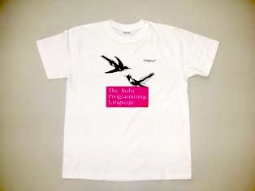

0025 号 読者プレゼント
はじめに
いつも Rubyist Magazine をご愛読いただき、誠にありがとうございます。 今回は 翔泳社様、 毎日コミュニケーションズ様、 オライリー・ジャパン様、 アスキー・メディアワークス様 (順不同) よりプレゼントのご提供をいただきました。
プレゼント
Rails Way

翔泳社様より 3 冊ご提供いただきました。
- 著者
- Obie Fernandez (著)、株式会社 クイープ (訳)、豊田 祐司 (監修)
- 税込価格
- 5,670 円
- 出版
- 翔泳社
- 発行日
- 2008/12
- 体裁
- B5変 608 ページ
- ISBN
- 9784798116990
- URL
- http://www.seshop.com/Detail.asp?pid=9895
上記 URL より内容のご紹介です。
内容
本書は、Web アプリケーション開発のデファクトスタンダードになりつつある Rails を使用し、高品質なアプリケーション構築するための包括的なノウハウを 提供する Ruby on Rails 開発者向け専門ガイドブックです。 Rails による開発のパイオニアである Obie Fernandez（と彼のチーム）は Ruby の語法や、デザインに対するアプローチ、ライブラリ、 Rails を価値のあるものにするさまざまなプラグインなどを含む Rails の各種 API を子細に検討し徹底的に解説しています。 彼は本書で一歩先行くプログラミングテクニックを提供し、 Rails の採用を容易にするオープンソースライブラリーを紹介し、 テストやシステムの運用に関する洞察を提示しているのです。 コードベースで記述されている本書を読めば、 なぜ Rails がそのように振る舞うのか、 あなたが望む動作をさせるにはどのようにすべきかがわかります。
Ruby (1) はじめてのプログラミング

翔泳社様より 3 冊ご提供いただきました。
- 著者
- arton、宇野 るいも (著)
- 税込価格
- 1,974 円
- 出版
- 翔泳社
- 発行日
- 2009/01
- 体裁
- B5変 304 ページ
- ISBN
- 978-4-7981-1799-7
- URL
- http://www.seshop.com/detail.asp?pid=10224
上記 URL より内容のご紹介です。
内容
本書は、プログラミングはまったく初めて、という方に向けた入門書で す。コンピュータの仕組みからプログラムの考え方まで、できるだけや さしく、しかも正確にゆっくり解説していきます。
プログラミングには、Ruby というプログラミング言語を使います。短く てわかりやすいサンプルプログラムを例としており、ごくごく初歩的な ことから少しずつ順を追って学べます。
学習したことは、小問題や章末の練習問題で確認します。ここで、自分 ひとりでプログラムを作る力を身につけられます。また、作成した Ruby プログラムを実行する環境も、付属の CD-ROM に収録されているインスト ーラパッケージで簡単に用意することができます。
さあ、楽しいプログラミングの世界へ、一歩踏み出してみましょう。
Ruby (2) さまざまなデータとアルゴリズム

翔泳社様より 3 冊ご提供いただきました。
- 著者
- arton、宇野るいも (著)
- 税込価格
- 1,974 円
- 出版
- 翔泳社
- 発行日
- 2009/02
- 体裁
- B5変 304 ページ
- ISBN
- 978-4-7981-1800-0
- URL
- http://www.seshop.com/detail.asp?pid=10255
上記 URL より内容のご紹介です。
内容
本書は、初めてプログラミングを体験するという方に向けた入門書です。 Ruby というプログラミング言語を使い、ごくごく初歩的なことからゆ っくりプログラミングを学んでいきます。
第 2 巻では Ruby のライブラリを使って、プログラムで扱うさまざまな データとその処理の手順 (アルゴリズム) の基礎知識を身につけます。 ひとりでプログラムを作成するときに欠かせない、Ruby のリファレンス マニュアルの引き方も覚えます。
また、データのソート (並べ替え) とサーチ (検索) を題材に、プログ ラミングで大切な処理効率の基本的な考え方も学びます。学習したこと は、小問題や章末の練習問題で確認できます。作成したRuby プログラム を実行する環境も、付属 CD-ROM を使って簡単に用意できます。
本書の学習では、プログラミングの“作る楽しさ”を感じながら、プロ グラミングの力を伸ばすことができるでしょう。
アジャイルな見積りと計画づくり

毎日コミュニケーションズ 様より 1 冊ご提供いただきました。
- 著者
- Mike Cohn (著)、安井 力、角谷 信太郎 (訳)
- 税込価格
- 3,360 円
- 出版
- 毎日コミュニケーションズ
- 発行日
- 2009/01
- 体裁
- A5 336 ページ
- ISBN
- 978-4-8399-2402-7
- URL
- http://book.mycom.co.jp/book/978-4-8399-2402-7/978-4-8399-2402-7.shtml
上記URLより、内容のご紹介です。
内容
ソフトウェア開発の難題である見積りと計画づくりを「アジャイル」にすること で、開発の現実に即した、誤差の少ない計画づくりができるようになる。 その技法を、分かりやすく説いた 1 冊。
「イントロダクション」より
本書のタイトルを「アジャイルプロジェクトの見積りと計画づくり」とすること もできた。だが実際には「アジャイルな見積りと計画づくり」というタイトルに なっている。2 つの違いは些細に見えるかもしれないが、そうではない。採用し た現在のタイトルは、見積りや計画づくりといったプロセスを、アジャイルに進 めなければならないと謳っているのだ。見積りと計画づくりがアジャイルでない のに、プロジェクトがアジャイルであるということはありえない。
本書は主に計画づくりを扱っている。計画づくりとは「なにをいつまでに作れば いいのか？」という質問に答える作業だと私は考えている。しかし、この質問に 答えるためには、まず見積りに関する質問 (これの大きさは?) と、 スケジュールに関する質問 (「いつできるのか?」「このときまでになにができるのか?」) に答えねばならない。
「訳者あとがき」より
本書は 2005 年 10 月に出版された Mike Cohn 著 『Agile Estimating and Planning』 (Pearson Education, 2005) の全訳です。 著者のマイク・コーンはアジャイル開発手法のひとつである SCRUM に 最初期から携わっているアジャイル開発のスペシャリストです。
本書の原著が出版されてから 3 年になります。 「動きが早い」とよく言われる (ほんとうにそうでしょうか? と思いますが、 それはまた別の話) ソフトウェア開発業界にあって 「 3 年前の書籍の翻訳」は不利に働くこともありますが、 本書に限ってはそんなことはありません。むしろ日本の皆さんにいま、 本書をお届けできるのはとても良いタイミングだと考えています。 その理由は主に 3 つあります。
まず、出版から 3 年が経過した現在、本書の原著は北米圏のアジャイルソフトウ ェア開発コミュニティで「必読の一冊」という評価が確立していることです。本 書はさまざまなアジャイルソフトウェア開発やソフトウェア開発の見積りや計画 に関する書籍や記事で参考文献とされています。ロバート・マーチンによる「ま えがき」にあった「本書は名著と呼ばれることになるだろう」という予言は見事 成就したといえます。
次に、今回の翻訳の出版にあたっても著者のマイクから「出版されてから年を追 うごとに売行きが伸びているよ」とメールで教えてもらったことです。これを裏 付ける現象として、マイク自身も「日本の読者に向けて」で語っているように、 北米ではここ数年でメインストリーム企業がアジャイル開発を採用する事例が急 速に増えています。
理由の最後は、実は本書が訳者の私たちの「秘密兵器」だということです。過去 3 年間、私たちはさまざまなソフトウェア開発の現場をアジャイルにしていくう えで、本書を大いに参考にしていました。誰よりも訳者である私たちが、本書の 内容は日本の開発現場に適用できると確信しています (そして、適用できる現場 の数は確実に増えていると感じています)。
本書のような名著の翻訳を私たちが手がけられたことを光栄に思うと同時に、私 たちの「秘密兵器」がこうして日本の皆さんの手に入りやすくなってしまうこと を少しだけ残念に思います :-)
プログラミング言語 Ruby

オライリー・ジャパン様より 3 冊ご提供いただきました。
- 著者
- David Flanagan、まつもと ゆきひろ (著)、卜部 昌平 (監訳)、長尾 高弘 (訳)
- 税込価格
- 3,990 円
- 出版
- オライリー・ジャパン
- 発行日
- 2009/01
- 体裁
- 大型本 472 ページ
- ISBN
- 978-4-87311-394-4
- URL
- http://www.oreilly.co.jp/books/9784873113944/
上記 URL より内容のご紹介です。
内容
表現力の高い文法と、強力で内容の豊かな API を持つコアクラスライブ ラリを備えた動的プログラミング言語である Ruby は、プログラミング の楽しさを感じる言語として世界中のプログラマから大きな支持を集め ています。本書は Ruby プログラミング言語を徹底的に、かつわかりや すく解説するものです。字句構造、データ型、式と演算子から条件分離 、関数プログラミング、クラスとモジュール、メタプログラミングまで Ruby 言語のすべてを包括的に説明しています。Ruby コアプラットフォ ームやプログラミング環境についても詳述。Ruby を学ぶすべての人にお くる Ruby 解説書の決定版です。
プログラミング言語 Ruby の T シャツ

オライリー・ジャパン様より 3 着ご提供いただきました。
アート・オブ・アジャイル デベロップメント――組織を成功に導くエクストリームプログラミング

オライリー・ジャパン様より 3 冊ご提供いただきました。
- 著者
- James Shore, Shane Warden (著)、木下 史彦、平鍋 健児 (監訳)、笹井 崇司 (訳)
- 税込価格
- 3,780 円
- 出版
- オライリー・ジャパン
- 発行日
- 2009/02
- 体裁
- B5変 464 ページ
- ISBN
- 978-4-87311-395-1
- URL
- http://www.oreilly.co.jp/books/9784873113951/
上記 URL より内容のご紹介です。
内容
アジャイル開発は人のなせる技です。アジャイル開発を極めるためには、 その時々で無数の可能性を評価して最善の方策を選択することを学ぶ必要があります。 本書は、あなたがアジャイル開発の「道」を極める手助けをしたいと思っています。
本書は、アジャイル開発の実践方法の 1 つである XP を中心に解説します。 XP の概要と導入について解説し、XP によるアジャイル開発をチームに導入することを目指します。 さらに XP のプラクティスについても詳述します。 なぜうまくいくのか、うまくいかないのか、繰り返し実践することで XP が身につき、 XP の指針を深く理解できるでしょう。最後に、さらなるアジャイルの理解へのアドバイスを示すことで、 実践を超えたところにある価値と原則を深く理解することを目指します。
アジャイル開発のすべてをまとめた本書は、プログラマはもちろん、テスター、 プロジェクトマネージャ、アーキテクト、ビジネスアナリスト、インタラクションデザイナ、 顧客などアジャイルに関心のあるすべての人におくる一冊です。
Java プログラマのための Ruby 入門

アスキー・メディアワークス様より 3 冊ご提供いただきました。
- 著者
- arton、高井直人 (著)
- 税込価格
- 3,570 円
- 出版
- アスキー・メディアワークス
- 発行日
- 2009/01
- 体裁
- B5変 352 ページ
- ISBN
- 978-4-04-867621-2
- URL
- http://asciimw.jp/search/?isbn=978-4-04-867621-2
上記 URL より内容のご紹介です。
内容
Java プログラマが今最も注目しているプログラミング言語、それが Ruby です。短期間に信頼性の高い Web サービスをリリースできるアプリケーションフレームワークとして爆発的に普及し始めた Ruby on Rails、このフレームワークを活用するためには Ruby の知識が不可欠です。本書は、Java プログラマが Ruby を学ぶ際にぶつかる疑問を解決し、 Java で身につけた知識を生かして Ruby を学ぶことができる画期的な Ruby 入門書です。
応募要項
応募締め切り
2009 年 3 月 4 日 (水)
応募方法
当選時に連絡のつくメールアカウントから、るびまプレゼント応募用メールアドレス RubiMa-present25 at quickml.atdot.net 宛てに (「at」はアットマークで置き換えてください)、 以下の項目を記入してお送りください。
- メールのサブジェクトは「るびま 25 号プレゼント： (希望のプレゼント名) 」
- 希望するプレゼントのタイトル
- Rubyist Magazine についての感想
- 公開してよいハンドルネーム
応募資格
本稿編集担当以外の Rubyist Magazine 読者の方なら誰でも。 重複する応募はご遠慮ください。
なお、当選した方にはプレゼントの感想を別途 Rubyist Magazine 編集部まで送っていただくか、URL を知らせていただけると幸いです。 感想は Rubyist Magazine のコンテンツとして掲載させていただく可能性があります。
当選発表
遅くなりました。 抽選の結果を発表します。応募者多数につき抽選となりました。当選した方、おめでとうございます！ 残念ながら落選した方、申し訳ありません。次回もお待ちしております :)。
※ 敬称略、順不同です。 なお、当選者の方々へは近日中に別途メールを差し上げますので、少々お待ちいただければ幸いです。
Rails Way
- すずき
- nari
- Layzie
Ruby (1) はじめてのプログラミング
- 桔梗
- pontaro
- 大工丑切
Ruby (2) さまざまなデータとアルゴリズム
- たねそば
- やまめ
- フライヤ
アジャイルな見積りと計画づくり
- ムムリク
プログラミング言語 Ruby
- ｍｉｃｃｈｉ
- gio
- TokyoIncidents
プログラミング言語 Ruby の T シャツ
- osm2
- ひがき
- るびい＠あひる台
アート・オブ・アジャイル デベロップメント 組織を成功に導くエクストリームプログラミング
- ナカオヒロシ
- 六辺香音
- edamame
Java プログラマのための Ruby 入門
- shintaro
- maluboh
- kazu
個人情報の取り扱いについて
当選者の方々に個人情報の連絡方法をお知らせした直後に、 この場所で、ご連絡するのに使ったメールの発信元と件名をお知らせします。
なお、これらの個人情報はプレゼントの発送以外の用途には使用いたしません。